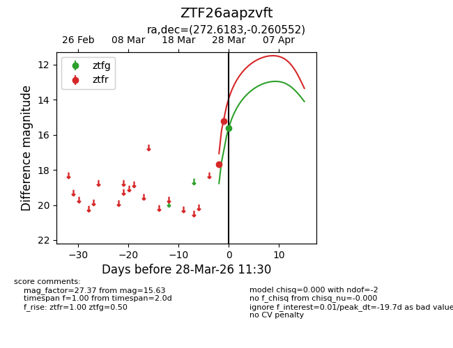
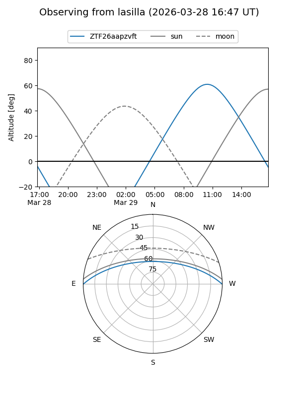
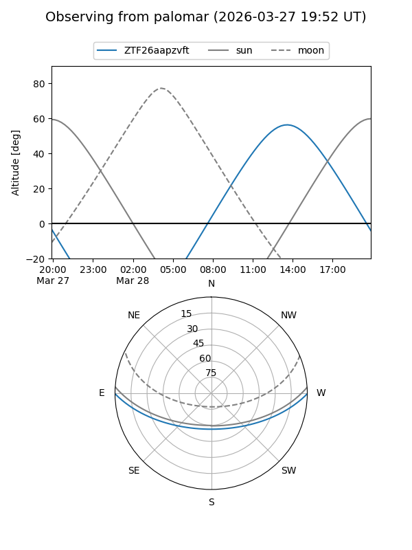
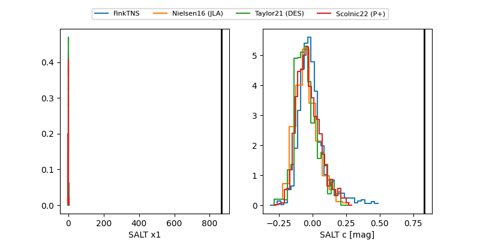

ZTF26aapzvft
Target ZTF26aapzvft at 2026-03-28 11:33
Aliases and brokers:
FINK: link
Lasair: link
ALeRCE: link
alt names
ZTF26aapzvft (ztf,fink_ztf)
Coordinates:
equatorial (ra, dec) = 272.6183,-0.26055
equatorial (HMS+DMS) = 18:10:28.39,-00:15:37.99
galactic (l, b) = (27.9884,+8.98394)
Flags:
Photometry:
last ztfg=15.63, ztfr=15.22
1 ztfg, 2 ztfr detections
Lightcurve

Visibility


Additional plots
